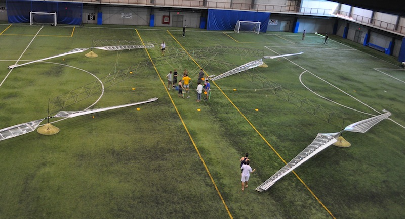

The Atlas plugin is an OpenMDAO implementation of the design code used to model the Aerovelo Atlas quad-rotor human-powered helicopter. In 2012, the Atlas won the Igor I. Sikorsky Human Powered Helicopter Competition by successfully hovering for over 60 seconds at an altitude over 3 meters.
As a design problem, the objective is to minimize the total power required to hover, with respect to the angular velocity of the rotors. Constraints relating to structural dynamics (strain, buckling failure, material failure, etc) are also included. An optimization can be performed over a single design point or over multiple design points, each representing a different set of operating conditions (such as altitude or wind speed).
Many additional design variables may also be activated and added to the problem, such as rotor size, thickness of structural members, among others. Canonically, the optimization is formulated to minimize total power with respect to rotor speed, such that lift is greater than or equal to total weight (including the pilot).